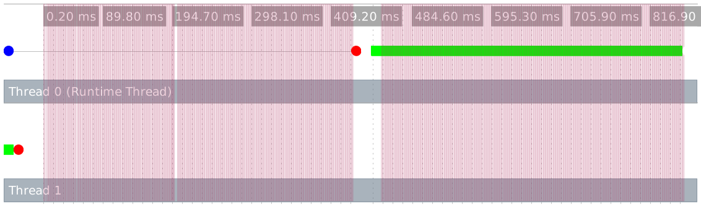
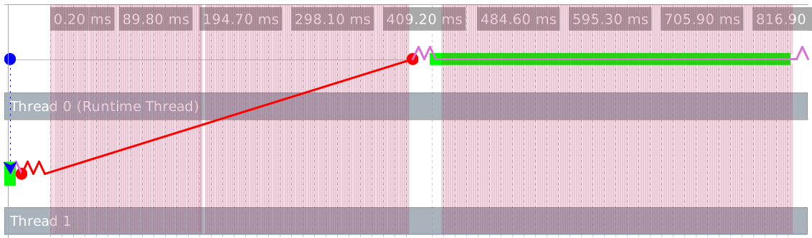
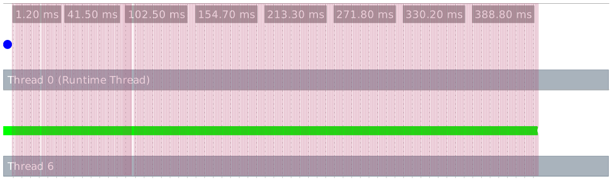
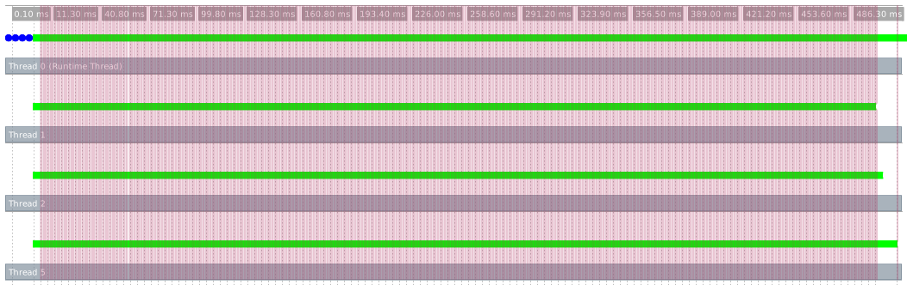
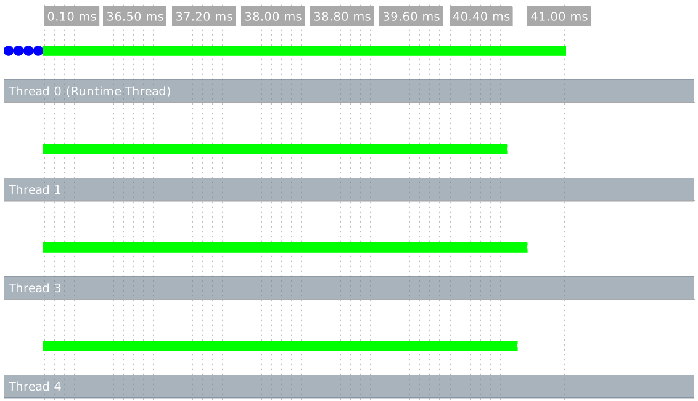

20 并行
Racket 提供两种形式的 并行（parallelism）：前景（futures） 和 现场（places）。 在提供多个处理器的平台上，并行可以提高一个程序的运行时性能。
关于 Racket 里连续性能的信息又见 性能。 Racket 还提供了对 并发（concurrency） 的线程，但线程没有提供并行；更多的信息见 并发与同步。
20.1 前景并行
racket/future 库通过与 前景（futures） 以及 future 和 touch 函数的并行， 为性能改进提供支持。然而，这些结构的并行性受到几个因素的限制，当前的实现最适合于数值任务。 在 DrRacket 中的性能 中的警告也适用于前景；值得注意的是，调试手段目前使前景失效了。
其它函数，如 thread，支持创建可靠的并发任务。 然而，即使硬件和操作系统支持并行性，线程也不会真正并行运行。
作为一个开始的例子，any-double? 函数获取一个数字列表，并确定列表中的任何数字有一个也包含在列表中的 double：
(define (any-double? l) (for/or ([i (in-list l)]) (for/or ([i2 (in-list l)]) (= i2 (* 2 i)))))
这个函数在二次时间中运行，所以像 l1 和 l2 这样的大列表可能需要很长时间（按秒顺序）：
(define l1 (for/list ([i (in-range 5000)]) (+ (* 2 i) 1))) (define l2 (for/list ([i (in-range 5000)]) (- (* 2 i) 1))) (or (any-double? l1) (any-double? l2))
加速 any-double? 的最好的办法是使用不同的算法。 然而，在提供至少两个处理单元的机器上，上述示例可以使用 future 和 touch 的大约一半时间运行：
(let ([f (future (lambda () (any-double? l2)))]) (or (any-double? l1) (touch f)))
前景 f 在与 (any-double? l1) 平行中运行 (any-double? l2)， 同时对 (any-double? l2) 的结果与 (touch f) 所要求的时间相同。
只要他们能安全地做到这一点，前景就可以并行运行，但“前景安全”的概念实际上与实施有关。 “前景安全”和“前景不安全”操作之间的区别在 Racket 程序级别上可能还不太明显。 本节剩余部分通过一个例子来说明这种区别，并显示如何使用前景的可视化工具有助于阐明这一点。
考虑一下曼德尔布罗特集合计算的以下核心：
(define (mandelbrot iterations x y n) (printf "starting\n") (let ([ci (- (/ (* 2.0 y) n) 1.0)] [cr (- (/ (* 2.0 x) n) 1.5)]) (let loop ([i 0] [zr 0.0] [zi 0.0]) (if (> i iterations) i (let ([zrq (* zr zr)] [ziq (* zi zi)]) (cond [(> (+ zrq ziq) 4) i] [else (loop (add1 i) (+ (- zrq ziq) cr) (+ (* 2 zr zi) ci))]))))))
表达式 (mandelbrot 10000000 62 500 1000) 和 (mandelbrot 10000000 62 501 1000) 每次都要花一点时间产生一个答案。当然，计算两者都需要两倍的时间：
(list (mandelbrot 10000000 62 500 1000) (mandelbrot 10000000 62 501 1000))
不幸的是,试图通过使用一个 future 来并行运行这两个计算并不能提高性能:
(let ([f (future (lambda () (mandelbrot 10000000 62 501 1000)))]) (list (mandelbrot 10000000 62 500 1000) (touch f)))
要想知道为什么,请使用 future-visualizer 将上述程序的执行过程可视化。
这将打开一个窗口，显示计算跟踪的图形视图。窗口的左上部分包含一个执行时间线：

每一横行代表一个并行任务,彩色的点代表程序执行过程中的重要事件;它们用颜色编码,以区分一种事件类型和另一种。 时间线中左上方的蓝点代表未来的创建。 Future 在线程 1 上执行了一段短暂的时间(由第二行的绿色条表示)。 然后暂停,因为运行时线程将需要执行一个不安全的未来操作(如红点所代表)。 这个停顿是漫长的,因为运行时线程在 touch 未来之前正在执行它自己的计算副本。 同时,粉红色的垂直线代表垃圾收集事件,这意味着跨并行任务的同步。
blocking 操作停止了对未来的评估,并且不允许它继续,直到它被触碰。 对未来的 touch 会导致其工作被运行时线程按顺序评估。 在 Racket 的 BC 实现中,一个 synchronized 操作也会停止未来。 运行时线程可以在任何时候执行该操作,一旦完成,未来可以继续并行运行。 CS 实现可以在不停止未来的情况下执行同步操作。
当你把鼠标移动到一个事件，可视化工具显示你的有关事件和画箭头连接在相应的前景事件的详细信息。 这张图片显示了对我们的未来的联系。

一条蓝色的虚线将未来中的第一个事件与创建它的未来连接起来, 一条红线将一个未来的阻塞事件与它的恢复连接起来,紫色的线将未来中的相邻事件连接起来。
我们看到没有并行的原因是, mandelbrot 中循环之前的 printf 操作需要查询 current-output-port 参数的值,这取决于 touch 的评估上下文。 即使通过使用 fprintf 和直接指向端口的变量来解决这个问题, 向端口写入也是一个阻塞操作,因为它必须在端口上加一个锁。 去掉 printf 就可以避免这两个问题。

更为普遍的是,我们可以创建 N 个期货来执行相同的计算,它们将并行运行:
(define fs (for/list ([i (in-range N)]) (future (lambda () (mandelbrot 10000000 62 500 1000))))) (for/list ([f (in-list fs)]) (touch f))
在一台至少有 4 个处理单元的机器上, N 为 4 :

在这个例子中,大部分的算术运算都会产生一个不精确的数字,其存储空间必须被分配, 这就会引发频繁的垃圾收集,这一点由密集的粉红色线条反映出来,有效地使整个图形具有粉红色背景。 垃圾收集不一定是个问题,但由于垃圾收集需要跨并行任务的同步,有时会限制性能。
利用 flonum 具体操作（见 Fixnum 和 Flonum 优化），我们可以重写 mandelbrot 以达到用更少的配置：
(define (mandelbrot iterations x y n) (let ([ci (fl- (fl/ (* 2.0 (->fl y)) (->fl n)) 1.0)] [cr (fl- (fl/ (* 2.0 (->fl x)) (->fl n)) 1.5)]) (let loop ([i 0] [zr 0.0] [zi 0.0]) (if (> i iterations) i (let ([zrq (fl* zr zr)] [ziq (fl* zi zi)]) (cond [(fl> (fl+ zrq ziq) 4.0) i] [else (loop (add1 i) (fl+ (fl- zrq ziq) cr) (fl+ (fl* 2.0 (fl* zr zi)) ci))]))))))
这种转换可以使 mandelbrot 的速度提高 10 倍左右,即使是在顺序模式下, 但避免分配也可以使 mandelbrot 在并行中更稳定地运行。 执行这个程序会产生以下无粉红色的结果,可视化器(相对于以前的图而言,没有比例):

作为一般的指导原则,如果一个操作需要咨询延续(比如获得一个参数值), 或者与Racket的线程系统进行交互,比如在输出端口或基于 equal? 的哈希表的实现中取得一个锁, 那么这个操作就是 blocking 的。 在 Racket 的 CS 实现中,大多数原语都是非阻塞的, 而 BC 实现包括许多阻塞或 synchronized 操作。
20.2 现场（place）并行
racket/place 库通过与 place 表的并行来提供性能改进的支持。 place 表创造了一个 现场（place），这实际上是一个新的 Racket 实例，可以平行于其它现场，包括初始现场。 在每一个现场都可以使用 Racket 语言的全部功能， 但只能通过消息传递来传递现场——使用 place-channel-put 和 place-channel-get 函数在有限的值集上——这有助于确保并行计算的安全性和独立性。
作为一个开始的例子，下面的 racket 程序使用一个 现场（place） 来确定列表中的任何一个数是否有一个也在列表中的双数：
#lang racket (provide main) (define (any-double? l) (for/or ([i (in-list l)]) (for/or ([i2 (in-list l)]) (= i2 (* 2 i))))) (define (main) (define p (place ch (define l (place-channel-get ch)) (define l-double? (any-double? l)) (place-channel-put ch l-double?))) (place-channel-put p (list 1 2 4 8)) (place-channel-get p))
place 后的标识符 ch 绑定到 现场通道（place channel）。 在 place 表中的剩余主体表达式在一个新的现场被求值， 这个主体表达式使用 ch 与产生新位置的位置来表达。
在上面的 place 表的主体中，新的位置接收到一个超过 ch 的数字列表，并将列表绑定到 l。 它接着调用表上的 any-double? 并且绑定这个结果到 l-double? 。 最终的主体表达式发送 l-double? 结果越过 ch 回到原来的现场。
在 DrRacket 里，保存并运行上面的程序后，在交互窗口对 (main) 求值以创建新的现场。 当在 DrRacket 内使用 现场（places），包含现场代码的模块在它被执行之前必须被保存到一个文件。 另外，作为 "double.rkt" 保存该程序并且用以下内容从一个命令行运行
racket -tm double.rkt
在 -t 标志告诉 racket 加载 double.rkt 模块的地方，-m 标志调用导出的 main 函数， 同时 -tm 组合这两个标志。
place 表有两个微妙的特点。首先，它将 place 主体提升为一个匿名的模块级的函数。 这种提升意味着，place 主体引用的任何绑定都必须在模块的顶层级可用。 第二，place 表 dynamic-require 在新创建的现场中的封闭模块。 作为 dynamic-require 的一部分，当前模块主体将在新的现场被求值。 第二个特性的后果是，该 place 不应立即出现在一个模块中或在模块的顶层调用的函数中； 否则，调用模块将在一个新的现场调用相同的模块，诸如此类，触发一系列将很快耗尽内存的现场创建。
#lang racket (provide main) ; Don't do this! (define p (place ch (place-channel-get ch))) (define (indirect-place-invocation) (define p2 (place ch (place-channel-get ch)))) ; Don't do this, either! (indirect-place-invocation)
20.3 分布式现场
racket/place/distributed 库为分布式编程提供了支持。
该示例演示了如何启动一个远程 racket 节点实例，在新的远程节点实例上启动远程现场，以及启动一个监视远程节点实例的事件循环。
示例代码也可以在 "racket/distributed/examples/named/master.rkt" 中找到。
#lang racket/base (require racket/place/distributed racket/class racket/place racket/runtime-path "bank.rkt" "tuple.rkt") (define-runtime-path bank-path "bank.rkt") (define-runtime-path tuple-path "tuple.rkt") (provide main) (define (main) (define remote-node (spawn-remote-racket-node "localhost" #:listen-port 6344)) (define tuple-place (supervise-place-at remote-node #:named 'tuple-server tuple-path 'make-tuple-server)) (define bank-place (supervise-place-at remote-node bank-path 'make-bank)) (message-router remote-node (after-seconds 4 (displayln (bank-new-account bank-place 'user0)) (displayln (bank-add bank-place 'user0 10)) (displayln (bank-removeM bank-place 'user0 5))) (after-seconds 2 (define c (connect-to-named-place remote-node 'tuple-server)) (define d (connect-to-named-place remote-node 'tuple-server)) (tuple-server-hello c) (tuple-server-hello d) (displayln (tuple-server-set c "user0" 100)) (displayln (tuple-server-set d "user2" 200)) (displayln (tuple-server-get c "user0")) (displayln (tuple-server-get d "user2")) (displayln (tuple-server-get d "user0")) (displayln (tuple-server-get c "user2")) ) (after-seconds 8 (node-send-exit remote-node)) (after-seconds 10 (exit 0))))
spawn-remote-racket-node 最初连接到 "本地主机（localhost）" 并开始一个在端口 6344 侦听的 racloud 节点以做进一步说明。 对新 racloud 节点的处理被分配给 remote-node 变量。 本地主机被使用以便这个例子可以只使用一个单一的机器来运行。 然而本地主机可以通过用 ssh 公钥访问任何的主机和 racket 更换。 supervise-named-dynamic-place-at 在 remote-node 上创建一个新现场。 新的现场将由它的名称符号 'tuple-server 在前景中标记。 一个现场描述符被要求通过使用 tuple-path 模块路径和 'make-tuple-server 的 dynamic-place 返回。
元组服务器现场的代码存在于文件 "tuple.rkt" 中。 "tuple.rkt" 文件包含 define-named-remote-server 表的使用， 为了调用它通过 supervise-named-dynamic-place-at 恰当地定义了一个实际的 RPC 服务器。
#lang racket/base (require racket/match racket/place/define-remote-server) (define-named-remote-server tuple-server (define-state h (make-hash)) (define-rpc (set k v) (hash-set! h k v) v) (define-rpc (get k) (hash-ref h k #f)) (define-cast (hello) (printf "Hello from define-cast\n") (flush-output)))
define-named-remote-server 表接受一个标识符和一个自定义表达式列表作为它的参数。 从一个 place-thunk 函数标识符通过预先计划这个 make- 前缀来被创建。 在这种情况下 make-tuple-server。 make-tuple-server 标识符是 place-function-name给到上边的 supervise-named-dynamic-place-at 表。 define-state 定制表转换成一个简单的 define 表，它通过 define-rpc 表关闭。
define-rpc 表扩展为两部分。第一部分是调用 rpc 函数的客户机存根。 客户机函数名字是通过连接 define-named-remote-server 标识符产生的， 元组服务器（tuple-server），用 RPC 函数名称 设置 以产生 tuple-server-set 。 RPC 客户机函数获取一个目标参数，它是一个 remote-connection% 描述符，进而是 RPC 函数参数。 这个 RPC 客户机函数通过调用一个内部函数 named-place-channel-put 将 RPC 函数名、set 和 RPC 参数发送到目标。 RPC 客户机接下来调用 named-place-channel-get 以等待 RPC 响应。
define-rpc 的第二个扩展部分是 RPC 调用的服务器实现。服务器由 make-tuple-server 函数内的一个匹配表达式实现。 tuple-server-set 的匹配子句匹配以用 'set 符号开头的消息。 服务器通过通信参数执行 RPC 调用，并将结果发送回 RPC 客户机。
除了没有从服务器到客户机的应答消息外， define-cast 表类似于 define-rpc 表。
(module tuple racket/base (require racket/place racket/match) (define/provide (tuple-server-set dest k v) (named-place-channel-put dest (list 'set k v)) (named-place-channel-get dest)) (define/provide (tuple-server-get dest k) (named-place-channel-put dest (list 'get k)) (named-place-channel-get dest)) (define/provide (tuple-server-hello dest) (named-place-channel-put dest (list 'hello))) (define/provide (make-tuple-server ch) (let () (define h (make-hash)) (let loop () (define msg (place-channel-get ch)) (define (log-to-parent-real msg #:severity (severity 'info)) (place-channel-put ch (log-message severity msg))) (syntax-parameterize ((log-to-parent (make-rename-transformer #'log-to-parent-real))) (match msg ((list (list 'set k v) src) (define result (let () (hash-set! h k v) v)) (place-channel-put src result) (loop)) ((list (list 'get k) src) (define result (let () (hash-ref h k #f))) (place-channel-put src result) (loop)) ((list (list 'hello) src) (define result (let () (printf "Hello from define-cast\n") (flush-output))) (loop)))) loop))))